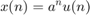
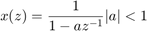
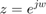
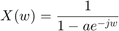

Practica 1. Transfromada discreta de Fourier
El objetivo de esta primera práctica es estudiar las propiedades de la Transformada Discreta de Fourier y su inversa, así como clari car conceptos como Resolución Espectral, Zero Padding, Enventanado, etc. Finalmente se aplicará el algoritmo de Goertzel para la detección de tonos en un sistema de alarmas.
Contents
Tarea 1




clear all; close all; a = input('Introduce a:'); N = input('Introduce N:'); n = 0:N-1; x = a.^n; wk = 2*pi*(0:N-1)/N; X = 1./ (1-a*exp(-1i*wk)); xrec = ifft(X); xrecimag = imag(xrec); xrecreal = real(xrec); figure(); stem(n,xrecreal,'b');hold on; stem(n,x,'ro'); hold off; xlabel('n'); title(['a=',num2str(a),' N=',num2str(N)]); legend('x(n)','x(n)_{rec}ifft') % cuando el valor de a se acerca a 1, el error entre la señal recuperada % con la ifft y la señal original aumenta.
Error using input
Cannot call INPUT from EVALC.
Error in Practica1 (line 20)
a = input('Introduce a:');
Tarea 2
clear all; close all; L = 5; x = ones(1,L); for N = [5 10 20 50 100 1000] n = 0:N-1; w = 2*n/N; % frecuencia normalizada en [0:1] X = abs(fft(x,N)); figure; stem(w,X); xlabel('Normalised frequency'); ylabel('Magnitude'); title(['L=',num2str(L),' N=',num2str(N)]); end % El zero padding no añade información adicional, permite ver mejor el % perfil del espectro. Recupero siempre la misma señal.
Tarea 3
clear close all clc Fm = 1000; tt = [25 25 100 100]; N = [25 100 100 1000]; for i=1:4 F1 = 90; F2 = 100; F3 = 240; F4 = 360; t = (Fm*tt(i))*0.001; x1 = cos(2*pi*(F1/Fm)*(0:t-1)) + cos(2*pi*(F2/Fm)*(0:t-1)); x2 = x1 + cos(2*pi*(F3/Fm)*(0:t-1)) + cos(2*pi*(F4/Fm)*(0:t-1)); y = fft(x2); % Generamos el eje X para interpretar frecuencias t1 = (0:t-1)*Fm/tt(i); figure; plot(t1,abs(y),'*-r'); yy = fft(x2,N(i)); hold on t2 = (0:N(i)-1)*Fm/N(i); plot(t2,abs(yy),'+-k') legend(['L=' num2str(t), ' N=' num2str(t)],['L=' num2str(t),' N=' num2str(N(i))]) axis([0 Fm/2 0 max([abs(y) abs(yy)])]); grid end % t=25ms Fm=1000 L=25 N=25 % La resolución fisica es $$ R_f = \frac{Fm}{L} = 40Hz $$ pero la % diferencia màs pequeña es de 10HZ. Por eso no podemos discernir las % frecuencias F1=90Hz y F2=100Hz. % t=25ms Fm=1000 L=25 N>25 % Aunque el orden de la DFT es mayor (la resolución computacional es mayor), % la resolución fisica es siempre la misma. Entonces no podemos discernir % las frecuencias F1 y F2. % t=100ms Fm=1000 L=100 N=100 % Hemos aumentado el numero de muestras de la señal L 4 veces y la % resolución fisica es exactamente 10Hz. Ahora es posible ver F1 y F2 % t=100ms Fm=1000 L=100 N=1000 % si aumentamos N (zero padding), anadimos puntos en el espectro y aparecen % los puntos de la ventana rectangular superpuesta. Los picos en dos % frecunecias diferentes de F1 y F2 porque los lobulos se solapan al espectro.